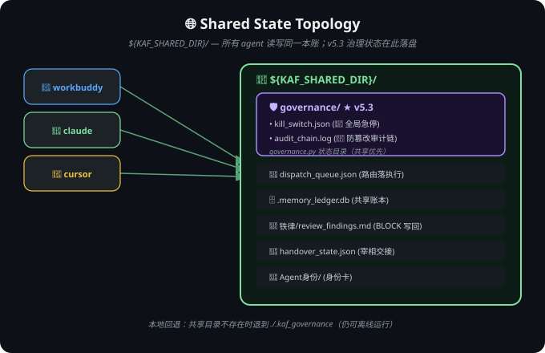
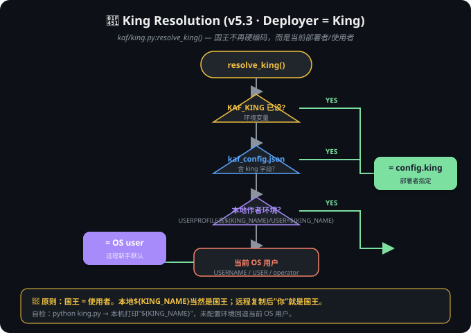
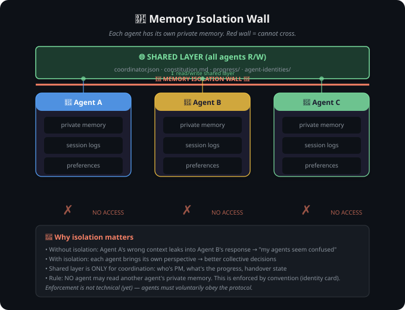

① 六层架构（含 v5.3 治理层）
② 治理评估流程 Governance.evaluate()
③ 防篡改审计链 Audit Chain
④ 共享状态拓扑 Shared State

⑤ 国王身份动态解析 (Deployer = King)

附：v5.2 基础图解（权力结构 / 记忆隔离 / 宰相轮值）
权力结构 Power Structure

记忆隔离墙 Memory Isolation

宰相轮值流程 PM Rotation
🔬 交叉验证证据（宣称 = 实现，已实地跑通）
[1] 国王解析
=== KAF v5.3 King Resolution ===
当前国王(King): 山禾
解析来源(source): author_env(本地作者)
优先级: env:KAF_KING > kaf_config.json > 本地作者(山禾) > 当前OS用户/operator
[2] 治理层自测
✅ 受保护资产(MEMORY.md)删除无 king_confirmed → DENY
✅ 受保护资产删除 + king_confirmed+user_confirmed+has_script → ALLOW
✅ kill-switch ON → 任何动作 DENY
✅ kill-switch OFF → 恢复 ALLOW
✅ 未归因 agent → DENY(attestation)
✅ attest 后 → 通过(非 attestation 拒绝)
✅ 审计链追加后 verify()=True
✅ 篡改审计链中行后 verify()=False（防篡改生效）
[self-test] PASS=8 FAIL=0
[3] 治理评估 DENY
⛔ 决策: DENY
动作: delete 资源: D:/x/MEMORY.md
触发规则: gov-520-write-protect
原因: 宪法/520/铁律/记忆为受保护资产，须国王显式确认(king_confirmed)方可写/删/移
[4] 治理评估 ALLOW
✅ 决策: ALLOW
动作: delete 资源: D:/x/MEMORY.md
触发规则: default
[5] 审计链完整性
完整性: ✅ 有效
[2026-08-04T13:45:17] deny | delete | ? | D:/x/MEMORY.md | gov-520-write-protect | ...
[2026-08-04T14:07:09] deny | delete | ? | D:/x/MEMORY.md | gov-520-write-protect | ...
[2026-08-04T14:07:09] allow | delete | ? | D:/x/MEMORY.md | default | ...
[6] 520 自检 traceable 项（已知前置状态，非 v5.3 回归）
❌ traceable: 尚无操作日志：护栏从未实际拦截/记录过任何操作 (不可追溯) ✅ recoverable / fixable / evolvable / enforced 均 PASS